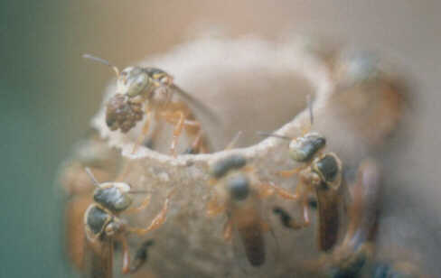

<==<
Retorna para o Índice Campanhas

____ |
 |
Campanhas
do CEPEN
|
_______________ |
Apresentação
O CEPEN acredita que o bem estar do nosso dia-a-dia
pode ser melhorado significativamente
sem nenhum dispêndio extra de dinheiro ou tempo,
somente melhorando o manejo do nosso ambiente.
No Âmbito Público,
mostrando o nosso desejo aos governantes e candidatos a tal.
Na Democracia, o governo existe para nosso bem estar,
para que possamos viver com liberdade e segurança, no rumo
do progresso.
Nada porém vem de graça, é feito com recursos
públicos,
fruto do dinheiro que damos sob forma de impostos.
Neste setor podemos influir muito, já pelo voto,
mas sobretudo solicitando como vontade popular maciça.
Nós cidadãos, num ambiente político democrático,
é que naturalmente determinamos a pauta das campanhas eleitorais
e
os programas e projetos de governo. Nada mais justo.
-
-
-
No Âmbito Privado
-
Este segmento é menos dependente de "burocracias", e portanto,
-
mais próximo de nossas mãos.
-
-
O ambiente de âmbito mais privado possível é a nossa
saúde.
-
Ela é única e intransferível (ninguém pode
ser sadio por nós).
-
[Nós mesmos, somos o ambiente para muitos seres viventes, entre
eles:
-
bactérias, fungos, virus, e animais bem maiores (alguns metros)].
-
-
Nós nunca estamos totalmente sadios e inatingíveis,
-
mas nossa estrutura de defesa orgânica está sempre em ação,
-
nos permitindo, na maioria das vezes, viver com grande saúde,
-
para reproduzir a própria espécie ao longo dos tempos.
-
-
É a nossa saúde e a dos nossos, a questão primeira.
-
Está intimamente ligada à ciência das coisas
-
e manejo das condições básicas, como:
-
alimento, água, ar, sono, convívio, atividade profissional,
etc..
-
-
No ambiente externo, (das nossas roupas para fora),
-
até a extensão das nossas propriedades,
-
também muita coisa facilmente pode ser feita para melhorarmos nosso
ambiente.
-
-
Cabe aqui, mais propriamente, aquela regrinha da natureza que diz:
-
-
"tudo aquilo que é vivo,
-
é resultado da interação do genótipo
com o meio ambiente"
-
-
-
Como somos animais sociais, e somos muitos,
-
[as moléstias vicejam em concentrações monoespecíficas
(de uma só espécie);
-
e a miséria tende a ser "democrática"],
-
necessitamos disseminar idéias úteis
-
e técnicas de manejo apropriadas ao bem comum.
-
-
É neste contexto que as Campanhas do CEPEN pretendem contribuir.
-
-
Partindo dos resultados de pesquisas e das análises dos diversos
ambientes,
-
reunir pessoas em torno de importantes questões ambientais,
-
para fazer, como diz a divisa do CEPEN, uma
-
-
"Ciência para a Ação"
-
-
-

-
Local: Carazinho - RS - Brasil Foto: arquivo CEPEN
/ 150p / M. D. N. Xavier
-
-
Este meliponídeo carrega apenas o peso que pode,
-
mas são estas pequenas ações que, num somatório,
garantem a
-
saúde, alimentação, segurança, higiene, conforto,
etc.,
-
que a sua comunidade necessita para estar em harmonia com o ambiente
-
e poder perpetuar-se.
-
-
A cabeça e corpo humanos podem "carregar" infinitamente mais.
-
Nosso mundo está clamando por esta sua força. Participe!
Invente!
-
Seja Muito Bem-vindo e Boas Campanhas
-